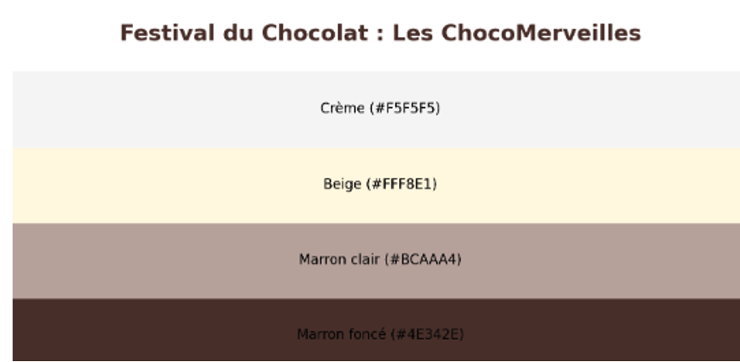

| 1. Planification |
Identification des besoins et des sections : Accueil, Intervenants, Infos pratiques, bielleterie,carnet de bord. |
Une liste claire des sections et fonctionnalités à intégrer. |
Fait sur papier brouillons |
| 2. Maquette avec FIGMA |
Création d'une maquette visuelle pour définir l'apparence exacte que je souhaite avoir sur mon site. |
Maquette |
Sur figma |
| 3. Choix des COULEURS |
Définition d'une palette de couleurs cohérente basée sur des tons chocolatés. |
Un design harmonieux et professionnel respectant le thème du chocolat fait avec color. |
 |
| 4. Sélection des POLICES |
Utilisation de la police 'Open Sans' et 'arial'pour assurer une excellente lisibilité. |
Un texte lisible sur tous les types d'appareils. |
choix fait apres recherche sur internet |
| 5. Création de la structure HTML |
Structure HTML avec des balises bien organisées pour chaque section. |
Une base solide pour le site web. |
HTML: accueil.html, intervenants.html, infosPratiques.html, billeterie.html,carnet-de-bord.html |
| 6. Mise en forme CSS |
Application de styles CSS avec des couleurs et mises en page définies. |
Un design attrayant et en cohérence avec la maquette. |
CSS: accueil.css, intervenants.css, infosPratiques.css,belleterie.css carnet-de-bord.css |
| 7. RESPONSIVES |
Ajout de media queries pour une adaptation sur tablettes et mobiles. |
Un site responsive offrant une expérience utilisateur optimale. |
Inclus dans les CSS (media queries) |
| 8. Intégration des IMAGES un dossier img créer pour |
Incorporation d'images libres de droit pour illustrer chaque section. |
Des illustrations et visuels engageants pour chaque section. |
Images: chef1.png, chef2.png, chef3.png, etc. |
| 9. Tests et ajustements |
Vérification du rendu sur différents appareils et corrections nécessaires. |
Un site web fonctionnel et visuellement agréable. |
Il y' a des chose que je n'ai pas çu faire comme faire fonctionné correctement mon caroussel ect |